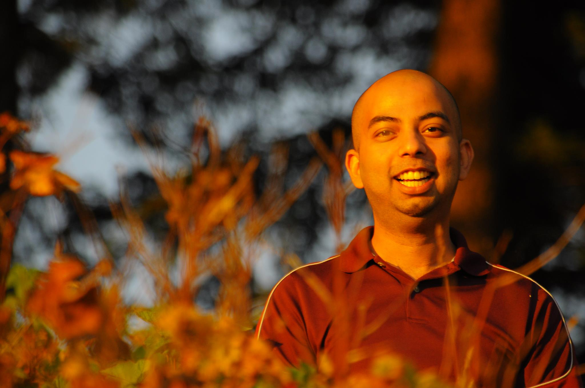

|  |
Susmit Jha (Susmit Kumar Jha)lastname at csl.sri.com , lastname at eecs.berkeley.eduSenior Scientist (Oct, 2016 - ) Computer Science Laboratory SRI International Past: Staff Research Scientist, United Technology Research Center, Berkeley (Dec, 2014 - Oct, 2016) Research Scientist, Intel, Hillsboro (Jan, 2012 - Dec, 2014) M.S. and Ph.D., EECS, UC Berkeley (Aug, 2006 - Dec, 2011) B.Tech., Dept. of Computer Science, IIT Kharagpur (2002-2006) |
Susmit Jha, Sanjit A. Seshia, Rhishikesh Limaye: On the Computational Complexity of Satisfiability Solving for String Theories CoRR abs/0903.2825: (2009)
Susmit Jha: Statistical Analysis of Privacy and Anonymity Guarantees in Randomized Security Protocol Implementations CoRR abs/0906.5110: (2009)
Stochastic modeling and analysis of Circadian Clock Pathway. (2006) [Available on request]
| 2018, 2014-2013 | International Conference on Computer Aided Verification (PC Member) |
| 2018-2017 | NASA Formal Methods (PC Member) |
| 2018-2015 | Design Automation Conference IP Track (PC Member) |
| 2018-2016 | Numerical Software Verification (PC Member) |
| 2015 | Verified Software: Theories, Tools, and Experiments (PC Member) |
| 2014 | Workshop on Formal Synthesis (PC Co-Chair) |
| 2013- | Journal of Information Technology and Software Engineering (Executive Editor) |
| 2014-2013 | International Conference on Formal Methods in Computer-Aided Design (PC Member) |
| 2013 | Complex Networks Dynamics: Cross-Disciplinary Tools for Modeling, Analysis (PC Member) |
| 2011 | International Workshop on Model-Based Design (PC Member) |
| 2016 | UTRC Great Job Award for DARPA Project on Communication Under Contested Environment | |
| 2014 | Research Scoping Award for Low Energy Platforms, Intel | |
| 2012 | SoC Converged Architecture Recognition Award for Automated NoC Synthesis for 14nm SoCs, Intel | |
| 2011 | Leon Chua Award, UC Berkeley | |
| 2006 | TCS Gold Medal, IIT Kharagpur |